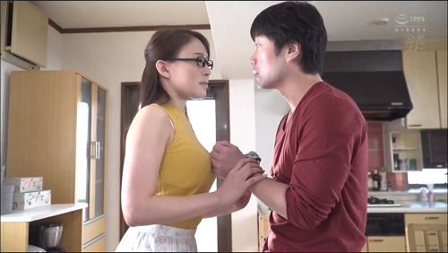

– Cường ơi, giúp chị với.
Tôi lật đật chạy sang nhà chị Hà hàng xóm.
Ở cái tuổi mà ông bà mình vẫn gọi là bẽ gãy sừng trâu, vì siêng năng tập thể dục, tôi được sở hữu một thân hình thật cường tráng. Tất nhiên, với một thân hình tràn trề nhựa sống như thế, những đòi hỏi về mặt thể xác cũng là lẽ thường tình. Từ sau cái lần “đái dầm” ấy, tôi vẫn thường lén lút thủ dâm với hình ảnh chị Hà nhà bên cạnh. Chị Hà có khuôn mặt dễ mến, như cái điểm chính thu hút tôi chắc các bạn cũng đoán được là thân hình vệ nữ ở tuổi 22 của chị. Từ lan can nhà tôi, tôi vẫn thường lén theo dõi chị phơi đồ vào buổi sáng. Chiếc váy ngắn màu trắng mong manh không làm tròn cái chức năng mà nó được giao phó là che đậy thân hình chị nhưng lại đồng lõa với những tia nắng buổi sáng đem đến cho tôi những hình ảnh thật tuyệt vời mà hằng đêm những hình ảnh đó theo tôi mãi vào giấc ngủ. Thời gian như dừng lại lúc chị vươn người vắt một cái gì đó lên dây phơi, để qua màn áo mờ mờ ảo ảo, tấm lưng được ánh nắng sớm viền một đường cong mềm mại chạy dài xuống đến bờ mông trang điểm bằng chiếc xì líp nhỏ xíu, mà phần trước và phần sau được nối với nhau bằng một chiếc nơ xinh xinh bên hông chị tròn trịa.

Đường cong thứ hai bắt đầu nơi cái cổ 3 ngấn thon thon chảy xuống đội vú. Đường cong này có một hình dáng mà tôi không biết thế nào cho hết vẻ đẹp của nó, chỉ biết rằng có những lúc không biết tình cờ hay hữu ý, bữa tiệc ấy bày ra trước mắt tôi nhưng hoặc là mắc cỡ, hoặc là sợ nó biến mất đi nếu bị phát hiện khi đang vụng trộm, tôi chỉ đỏ mặt và nhìn ngay đi chỗ khác, lòng lại thầm rủa mình soa lại nhát gan như vậy. Trên chỗ cái quầng hồng hồng ở đầu vú, đường cong thắt một nút nhỏ làm núm rồi tiếp tục vẽ tới chiếc bụng thon, cái rốn be bé, xuống mãi, xuống mãi, xổ một đường chắc nịt lên đùi chị.
Tôi chạy thẳng vào phòng chị. Nhà không có ai, chị Hà thì đang loay hoay với cái đèn bàn cứ lúc tắt lúc sáng.
– Cứ cái lúc cần thì ba hồi tắt ba hồi sáng, bực mình ghê!
– Chị để em tháo ra coi lại cái công tắc, sửa chút xíu là xong chớ gì!
Khó khăn gì với tôi ba cái lẻ tẻ này, tôi tự tin xoay tournevis mở cái đế đèn ra. Nhưng sự đời đâu có đơn giản thế, cái hơi thở thơm tho ngọt ngào kia đang vào tai vào mặt tôi. Vâng, chị đang ngồi kế bên tôi xem tôi sửa cái đèn bàn, còn tôi thì lại không thể tập trung vào cái đèn bàn mà là vào bờ ngực trắng ngần của chị lộ ra sau cái cổ áo rộng của chính chiếc váy ngắn mỗi sáng làm tôi chết giấc. Đôi vú ấy nằm sát vai tôi ở một khoảng cách mà chỉ cần thở mạnh là khoảng cách ấy sẽ trở thành con số âm. Chưa hết, đùi tôi đang phải cố gắng để không run rẩy khi nó đang nhận được một cảm giác mát lạnh từ đùi chị. Tôi len lén nhìn xuống, cặp đùi đẹp và gần qúa. Cặp đùi ấy chỉ được tà váy che có chút xíu cái chỗ mà tôi ngay cả trong mơ cũng chỉ đoán mò mà thôi. Là hàng xóm, biết nhau từ nhỏ, chị vẫn cứ xem tôi con nít như ngày nào, vì vậy chị rất thoải mái trong cách ăn mặc. Và tôi thì cũng chẳng hơn gì, ở nhà thì ở trần, đánh có cái quần soọc cũng mỏng te, bây giờ mới thấy khổ. Dương vật tôi cứng ngắt, chỏi cái đầu tròn tròn vào quần tôi, và như vậy, hình dạng cú nó thấy rất rõ từ bên ngoài. Tôi biết chị đã nhìn thấy, và có lẽ vì vậy, hơi thở kia ngày càng mạnh hơn, ấm hơn, thơm hơn. Còn tôi thì dù đã nín nở nhưng đầu vú kia đã bắt đầu nhè nhẹ âu yếm vai tôi. Tay tôi run lên bần bật, chiếc tournevis không còn nghe lời tôi nữa mà lại nhảy lên, văng ra rơi vào lòng tôi. Tất nhiên nó không rơi xuống đất vì “cái kia” đã giữ nó lại. Chị nhặt chiếc tournevis cho tôi và không sao tránh khỏi sự đụng chạm. Chị thoáng ngạc nhiên:
– Sao cái này cứng ngắt vậy, cưng?
Mặt tôi đỏ như gấc, tôi lí nhí:
– Em xin lỗi, nhưng chị đẹp qúa.
Mặt chị cũng đỏ:
– Lỗi gì em! Tournevis nè!
Và thay vì đặt chiếc tournevis lên bàn thì chị lại làm văng chiếc tournevis về bên kia. Tôi biết, chị cũng đang thật bối rối vì cái dương vật mất dạy của tôi. Tôi đâu có sai bảo được nó. Chị Hà nhoài người cố với cái tournevis, và trời ơi, chiếc váy ngắn kéo lên một khoảng xa để lộ cho tôi thấy toàn bộ cặp đùi, chiếc nơ, cái quần xì líp trắng nhỏ xíu, mỏng tanh, và cả khoảng lông đen mượt ẩn hiện dưới lớp vải trắng đó. Chị đưa cho tôi chiếc tournevis.
Tôi cầm lấy một cách vô thức, chiếc tournevis có tiếp tục được đặt vào con ốc ở chiếc đèn bàn không thì tôi không biết, nhưng tôi biết có một bàn tay nhẹ nhàng đặt lên cái chỗ đang cương cứng như sắp nổ tung của tôi. Chị thở nhẹ vào tai tôi:
– Cường ơi, cởi cái quần này ra cho chị xem chút đi, hôm nay không có ai ở nhà đâu. Chị Hương và chị Trang đi cắm trại với bạn ở Mũi Né, hai ba bữa mới về. Hồi nào giờ, chỉ nghe nói chứ có thấy cái này hồi nào đâu, nghe Cường!
Cái mông tôi tự nó nhớm lên cho bàn tay chị kéo nhẹ chiếc quần. Phía dưới thì trơn tru nhưng phía trên thì vướng lại. Bàn tay nhỏ nhắn kia nhẹ nhàng đè dương vật của tôi xuống. Chiếc quần đùi trội tuột đi. Tôi hoàn toàn trần truồng trước mặt người con gái, vươn thẳng lên từ đám lông rậm, dương vật của tôi háo hức không như chủ của nó đã gần như dành toàn bộ hệ thống thần kinh cho một thế giới khác. Một cảm giác lâng lâng, chị nâng niu. Nhè nhẹ ve vuốt dương vật của tôi lúc này đang rỉ ra chất nước trơn trơn, trong suốt. Ngón tay nhỏ nhắn mát rượi của chị đang nghịch ngợm sự trơn trợt đó ngay trên đầu dương vật của tôi. Tôi rùng mình, ngón tay ấy lập tức rời ra và chuyện sang đôi ngọc hành. Đôi mắt chị không chớp, chị thở mạnh, mặt chị đỏ bừng, không phải cái đỏ của sự thẹn thùng mà là của lửa. Tôi run run nhấc nhẹ tà váy của chị, những mong tìm thấy dù là mờ mờ cái khoảng lông đen mượt. Nhưng tôi đã nhìn thấy không phải mờ mờ mà là rất rõ cái khoảng lông mà tôi chờ đợi. Tôi còn thấy rõ cả cái cửa hồng hồng giữ khoảng lông khi đôi chân chị lúc này đã mở rộng. Bởi sự mờ ảo của cái quần xì líp đã được thấm đẫm chất nước trong suốt tuôn ra từ cái cửa đó, cửa âm đạo – tôi nghe người ta gọi như vậy. Rời đôi ngọc hành của tôi, chị kéo tuột chiếc áo qua đầu:
– Chị xấu lắm, đừng nhìn chị chằm chằm như thế. Bộ em chưa thấy con gái ở truồng bao giờ sao?
– Con gái nhỏ xíu, trong xóm thiếu gì, nhưng lớn như chị, em chưa thấy bao giờ. Mà sao chị đẹp qúa vậy. Em thích nhìn chị ở truồng như vậy hoài.
Nắm dương vật của tôi chị kéo lại phía giường ngủ, chị ôm chặt, ép đôi vú nhỏ vào bộ ngực vạm vỡ của tôi, chiếc lưỡi quấn lấy môi tôi, chị vật tôi ngã nhoài trên giường, dương vật tôi tìm kiếm trên miếng vải duy nhất trên người chị. Tôi miết lưỡi trên cổ chị rồi ngoạm lấy vú chị. Tôi bú say mê như con mèo con khát sữa, thấm đẫm nước miếng, môi tôi vuốt ve bầu vú cong ái săn chắc, mút thật mạnh cái hột bắp mà bây giờ cững đã cứng ngắt như cả người chị. Chỉ còn tiếng rên phát ra từ cái cổ 3 ngấn là còn nhẹ nhàng, mềm mại.
Rời vú chị, môi tôi để lại một vết đỏ ngay dưới rốn chị, lướt nhẹ qua chiếc nơ, sự mượt mà của làn da đùi non chị, quẹo trở lại sau điểm mốc là đầu gối chị, men theo đùi trong trở lại nơi gò vệ nữ, với rừng rậm, suối khe. Hai tay tôi loay hoay mãi với chiếc nơ, hai tay chị thay vì giúp tôi mở khoá thì lại ấn chặt đầu gối tôi vào âm hộ, miệng không ngớt rên rỉ:
– Cởi quần chị ra đi, Cường ơi … sao chậm vậy, em đừng làm chị chết vì chờ đợi chứ, cởi đại ra đi Cường, ừ … A …aaa…
– Em không thấy đường , cái nút này chặt quá…
– Bứt đại ra đi … nhanh lên chị không chờ được nữa đâu … Aaa
Cởi thì khó nhưng bứt thì ngược lại, những ngón tay khoẻ khoắn của tôi gỡ bỏ hoàn toàn bức rào cuối cùng. Lưỡi của tôi ngọ ngoạy trong âm hộ của chị, bàn tay tôi ve vuốt mu chị. Rồi ngón tay tôi banh nhẹ âm hộ chị cho lưỡi tôi đặt vào âm vật đang chỏi cao, đỏ rực. Khoảng nệm dưới mông chị ướt một khoảng lớn.
Chị nhắm mắt kéo nhẹ vai tôi, tôi nhoài người lên mình chị và cảm nhận bàn tay chị hướng dẫn dương vật tôi, đặt nó ngay trên cái khe. Tôi ấn nhè nhẹ, nhè nhẹ, dương vật tôi ngập trong cái khe kẽ lầy nhầy, nóng rẫy của chị. Một tiếng rú nho nhỏ vào tai tôi cho tôi biết rằng tôi đã hoàn toàn vào trong chị. Mông chị nẩy lên, ép vào tôi thất sát.
– Sao sướng qúa vậy Cường ơi, nhấp đi Cường, mạnh đi Cường ….
Tôi rút nhẹ ra rồi ấn mạnh, chị cũng hiểu ý và cùng ấn mạnh với tôi. Tôi lui tới ngày cành nhanh, chị cố ưỡn thật cao mong ép sát âm môn vào tôi mạnh chừng nào tốt chừng nấy. Chúng tôi quần nhau, miết nhau, cho đến khi ngực chị đỏ rực, chị cắn chặt mô, mặt nóng bừng, chị rú lên rồi hông chị giật mạnh, mắt nhắm nghiền, rã rời, chị rơi xuống nệm. Dương vật tôi tuột ra khỏi chị. Nó cũng giật mạnh rồi phủ lên mặt mũi chị, lên ngực chị, lên bụng chị và cả khoảng lông đen thẫm nơi hạ thể những sợi confetti màu trắng đục. Tôi cũng gục xuống, thở dốc trên mình chị. Những sợi confetti lấp đầy những khoảng trống còn lại giữa hai chúng tôi. Gương mặt chị giãn ra thoả mãn. Chị cười và thì thầm vào tai tội:
– Tối nay, Cường dám ngủ bên nhà chị hông?
Hết